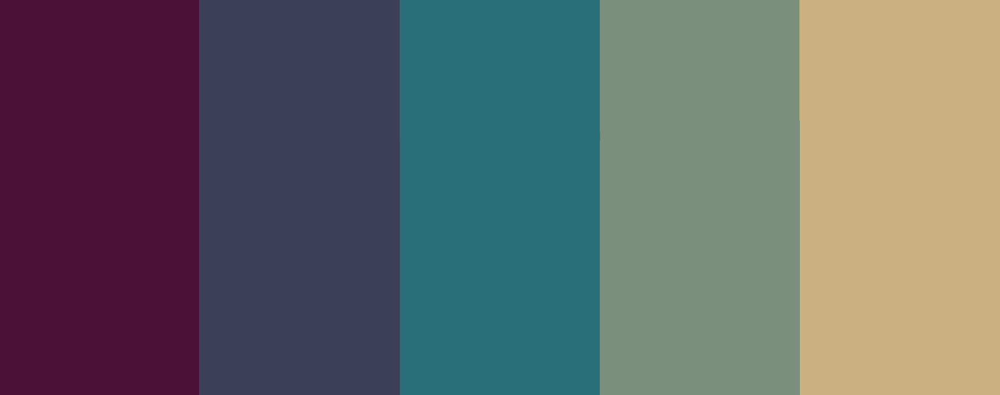

DOME es un survival shooter scroller 2D donde el jugador controlará a uno de los últimos supervivientes de una colonia establecida en el planeta helado Aurora. Cada día, deberá aprovechar las horas de luz para buscar los objetos que necesita para sobrevivir en este hostil y frío lugar. Además, durante las horas de noche el frío es tal que deberás volver al refugio a descansar y gestionar tu tiempo y recursos. ¿Serás capaz de escapar?.
Cuenta con un ciclo diario en el que el jugador dispondrá de 12 horas para saquear puntos de interés, seguidas por otras 12 horas para descansar y gestionar sus recursos en el refugio, ya que será de noche y el frío le impedirá salir. Cuando termine sus tareas en el refugio, podrá dormir lo que le quede de la noche para reponer sus fuerzas y volver a explorar.
El jugador puede ir a puntos de saqueo que serán serán pequeños, rápidos de recorrer y contendrán botín escaso dependiendo del lugar (farmacia -> ingredientes de medicina, supermercado -> comida, etc) en los que el jugador gastará tiempo del día. Solo podrá saquear lo que su equipamiento y su estado (herido, hambriento, cansado) le permita llevar de vuelta al refugio.
El jugador dispone de un refugio, una zona pequeña donde el jugador tendrá acceso a diferentes estaciones de crafteo para crear objetos. Además, dispone de una cama para descansar y comenzar el siguiente ciclo de día. Cada acción que el jugador realice en el refugio contará contra el tiempo que tiene aquí. Cada noche se disponen de cinco puntos de acción, representados como relojes.
Además, el jugador dispone de un inventario en el que guardar los items conseguidos, munición de armas, luchar contra los enemigos en las zonas de raid, curarse las heridas y distintos estados de salud. Todo con el fin de obtener las piezas necesarias de la nave que tiene que reconstruir para salir del planeta.
En el repositorio se encuentra la información del juego es una especie de GDD resumido.
Mi contribución al proyecto podría resumirse en: sistema de estados de salud del jugador, efecto de hipotermia, menús (selección de raid, pausa y ajustes), mecánica de movimiento en escaleras, creación y diseño de todos los mapas del juego y parallax de los fondos.